上一节说到成员变量，这一节说一下方法表
图一：
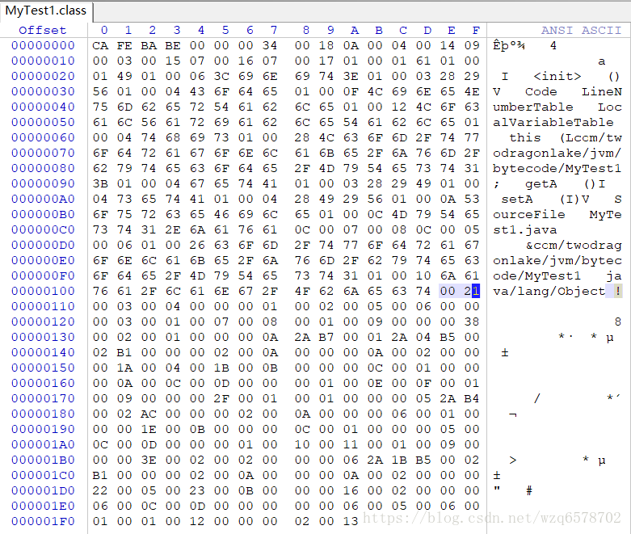
图二：
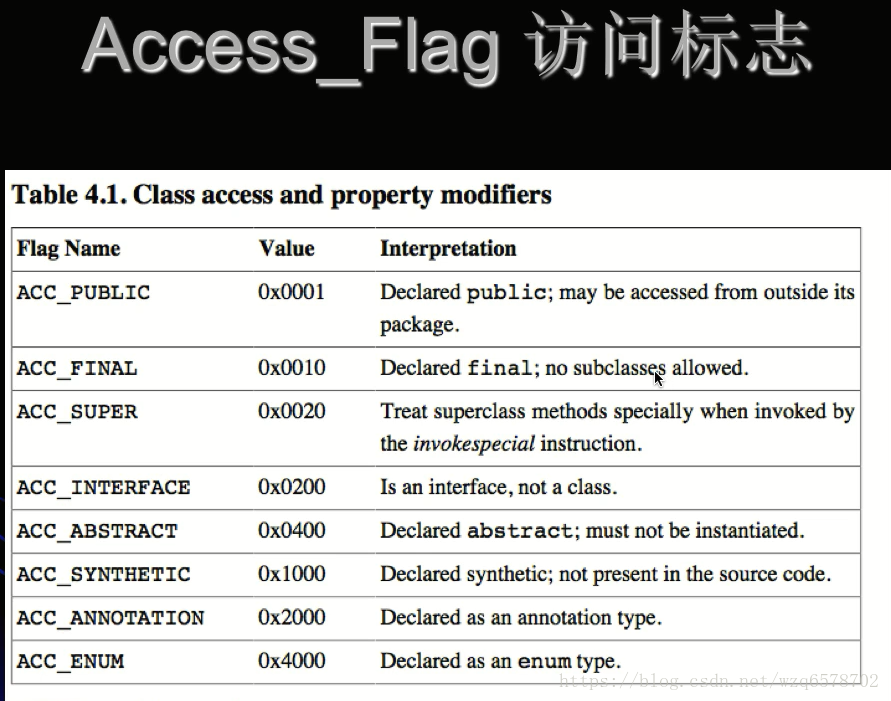
图三：
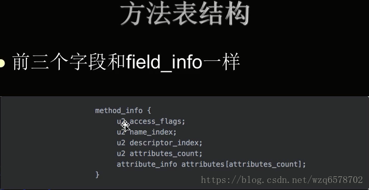
行号00000120 开始就是方法表的开始，刚开始2个字节是方法的数量：00 03 是三个方法（无参构造器、变量a的get和set方法）
方法表：
| 类型 | 名称 | 数量 |
|---|---|---|
| u2 | access_flags | 1 |
| u2 | name_index | 1 |
| u2 | descriptor_index | 1 |
| u2 | attributes_count | 1 |
| u2 | attributes | attributes_count |
每一个方法都是这样的一个结构。
00 03后边是 access_flags （00 01）根据图二表示的是public的修饰，name_index:00 07 ，descriptor_index:00 08 在常量池里边是：[ #7 = Utf8 <init>] 、[#8 = Utf8 ()V] ;
然后就是方法的attributes_count 和attributes ：
attributes_count :比如方法执行的字节码是什么？方法的行号表是什么？局部变量表是什么？这些信息的sum。
attributes_count :00 01 ，方法只有一个属性，但是attribute_info 的结构是什么呢？为此我们需要知道attribute_info 的结构，如下：
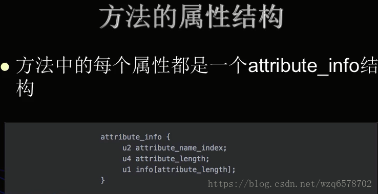
attributes_count :00 01 后边的2个字节就是attribute_name_index:00 09(常量池的【#9 = Utf8 Code】).
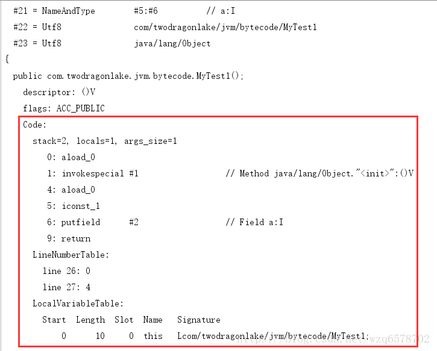
attributes_length: 00 00 00 38 (十进制56)
info:是后面的真正的属性的内容，即方法的字节码。
方法的属性结构：
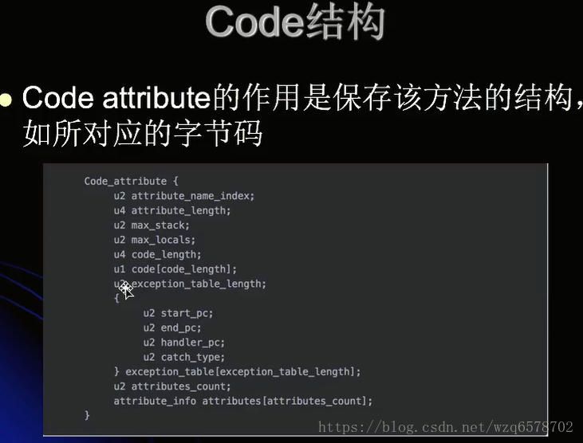
- JVM预定义了部分attribute，但是编译器自己也可以实现自己的attribute写入class文件
里， 供运行时使用。 - 不同的attribute通过attribute_name_index来区分。
- Code结构：
code attribute的作用是保存该方法的结构，如所对应的字节码：
Code_attribute{
}u2 attribute_name_index; //00 09 u2 attribute_length; // 00 00 00 38 u2 max_stack; //00 02 u2 max_locals; //00 01 u4 code_length; //00 00 00 0A u1 code[code_length]; u2 exception_table_length; { u2 start_pc; u2 end_pc; u2 handler_pc; u2 catch_type; } exception_table[exception_table_length]; u2 attributes_count; attribute_info attributes[attributes_count];
attribute_length: 表示attribute所包含的字节数，不包含attribute_name_index和attribute_lenght字段。
max_stack表示这个方法运行的任何时刻所能达到的操作数栈的最大深度。
max_locals表示方法执行运行期间创建的局部变量的数目，包含用来表示传入的参数的局部变量。
code_length表示该方法所包含的字节码的字节数以及具体的指令码
具体字节码即是该方法被调动时，虚拟机所执行的字节码。
code_length是00 00 00 0A（十进制10），往后数10个字节：
2AB700012A04B50002B1
如图：
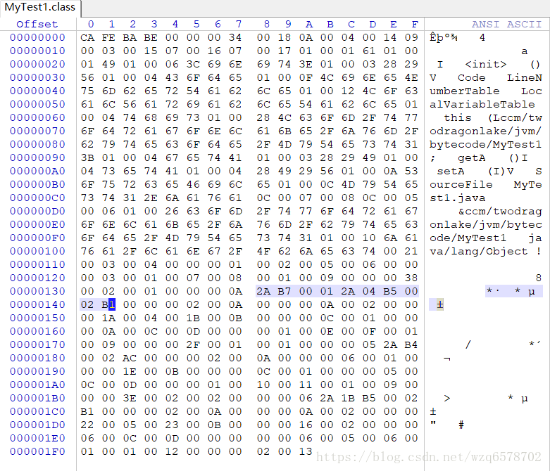
这是个字节对应的就是 jclasslib插件反编译的如下信息：
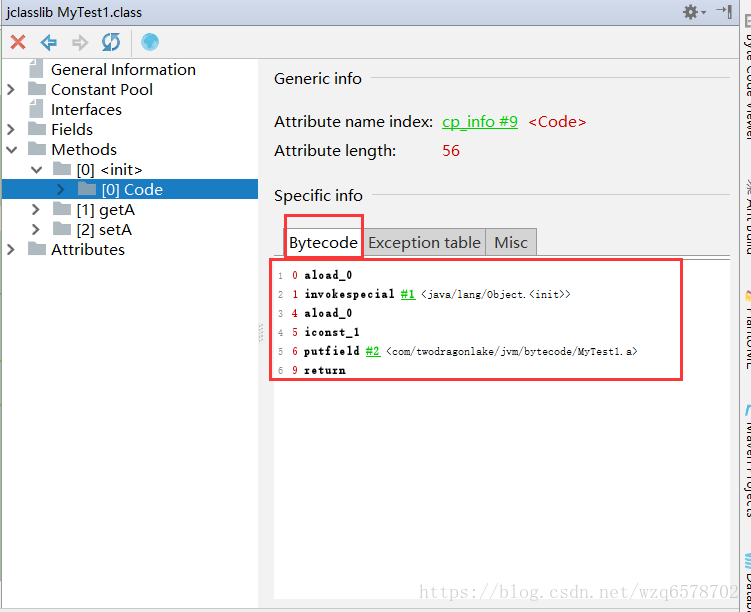
这里边有很多助记词。助记词和16进制编码在jvm里边有已经定义好的映射关系。
单击bytecode里边的load0进入oracle的官方网站，load0在doc里边对应的是16进制的0x2a，而在我们的class文件里边也是2A 。
1 | aload_0 = 42 (0x2a) |
同样的invokespecial 在doc里边对应的是16进制是0xb7
1 | invokespecial = 183 (0xb7) |
invokespecial 可以简单理解为调用父类的构造方法，invokespecial 是带有参数的，参数就是invokespecial 后边的2个字节描述的信息：00 01 ，而00 01是常量池里边的某个常量，就是：
1 | #1 = Methodref #4.#20 // java/lang/Object."<init>":()V |
MyTest1的父类是Object，MyTest1构造器会首先调用父类的构造器，这个和我们对Java学习的理解不谋而合。
然后接下来又是 aload_0 ，以及 iconst_1 助记词，在doc里边有7个：
1 | iconst_m1 = 2 (0x2) |
我们的iconst_1对应的1进制是0x04 。
接下来是putfield，它是带参数的。
1 | putfield = 181 (0xb5) |
putfield 对应的16进制是0xb5，我们的二进制文件也是0xb5，没有问题，然后B5后边的是putfield 的参数：00 02 ，00 02在常量池里边的是:
1 | 2 = Fieldref #3.#21 // com/twodragonlake/jvm/bytecode/MyTest1.a:I |
putfield 的作用是 Set field in object 即 赋值，给谁赋值？ 给com/twodragonlake/jvm/bytecode/MyTest1.a:I 赋值，赋值为多少？就是推到栈顶的上一个助记词iconst_1。
之后是 return 助记词：
1 | return = 177 (0xb1) |
return 的1进制是B1，我们的class文件当中也是B1。
整个init方法完成了对a的赋值。
接下来的00 00 是异常表：
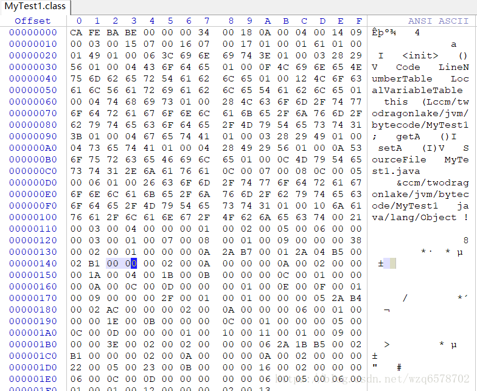
由于构造方法没有异常所以是0。
exception_table,这里存放的是处理异常的信息
每个exception_table表项由start_pc, end_pc,handler_pc,catch_type组成。
start_pc h=和end_pc表示在code数组中的从start_pc到end_pc处包含start_pc,不包含end_pc)的指令抛出的异常会由这个表项来处理。
handler_pc表示处理异常的代码的开始处，catch_type表示会被处理的异常类型，它指向量池里的一个异常类。当catch_type为0时，表示处理所有的异常。
然后是u2 attributes_count; 也就是后边的： 00 02 ，意味着构造方法有2个属性，之后的00 0A（十进制10）是属性的索引，在常量池里边是10号常量：
1 | #10 = Utf8 LineNumberTable |
即，行号表:
附加属性
lineNumberTable:这个属性用来表示code数组中的字节码和java代码行数之间的关系。
这个属性可以用来在调试的时候定位代码行的行数。这是属性在调试的时候比较有用，就是抛出异常的代码的行数。
LineNumberTable_attribute{
u2 attribute_name_index; //00 0A
u4 attribute_length; // 00 00 00 0A
u2 line_number_table_length; // 00 002 表示2个
{
u2 start_pc;
u2 line_number;
} line_number_table[line_number_table_length]
}
attribute_name_index z 是00 0A ，attribute_length是00 00 00 0A ，也即是说往后数10个字节都是attribute的整体，后边的10个字节是：0002 0000 001A 0004 001B 。0002 是长度，既是2个，后边的0000 001A 0004 001B 2个字节是一对，0000 对应 001A（十进制26） ；0004（十进制4） 对应001B(十进制27) ；
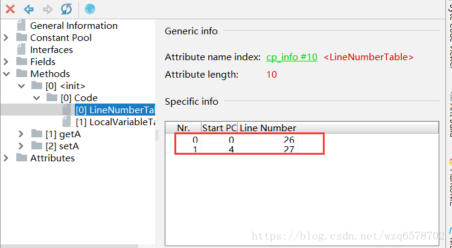
接着后边的是00 0B（十进制11） 对应常量池：
1 | #11 = Utf8 LocalVariableTable |
即，局部变量表。
局部变量表栈的字节的长度：00 00 00 0C（十进制12），即后边的12个字节就是局部变量表的整体，即：0001 0000 000A 000C 000D 0000
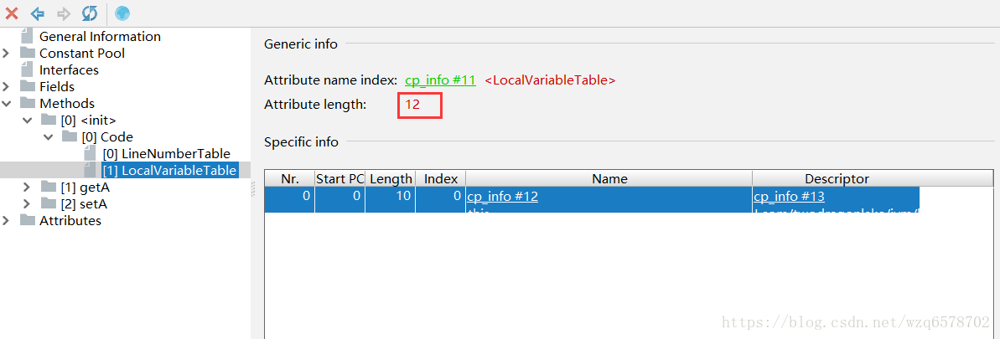
首先0001是局部变量的个数是1 ；
0000 是局部变量的开始位置(start PC)；
000A 是局部变量的结束位置(length)；
000C 是局部变量对应常量池里边的位置是12，即：
1 | #12 = Utf8 this |
构造方法为什么会有this？ this，对于实例方法（非static）是默认隐式传递进来的。实例方法至少有一个局部变量，那就是this。
000D是对局部变量的一个描述；即：
1 | #13 = Utf8 Lcom/twodragonlake/jvm/bytecode/MyTest1; |
0000 是jdk1.6加入的用来做校验检查的，略过。
到此init方法解析完毕；
剩下的是getA方法：
00 01 是访问修饰符，是public的。
00 0E 名字索引， 即：#14 = Utf8 getA
00 0F 描述符索引，即：#15 = Utf8 ()I
00 01 是attributes_count，只有一个。
接着是 00 09 : 名字的索引 #9 = Utf8 Code
00 00 00 2F：属性的长度，十进制是47，后边的47个字节是getA方法Code的整体。
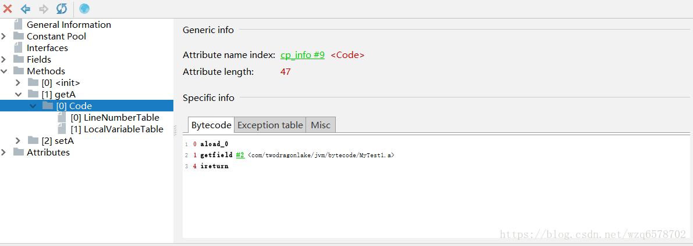
00 00 00 2F 之后是
max_stack : 00 01
max_locals : 00 01 局部变量的数目 也是1个，既是this。
code_length: 00 00 00 05
往后数5个字节：
2A（aload_0）
B4(getfield)
00 02 常量 ： #2 = Fieldref #3.#21 // com/twodragonlake/jvm/bytecode/MyTest1.a:I
AC ireturn ireturn是返回一个整型。
2AB40002AC 后边的00 00 是异常表，程序没有抛出异常所以是0。
00 02 是属性个数有2个。
00 0A 第一个属性指向第十个常量。#10 = Utf8 LineNumberTable
00 00 00 06 属性长度是6
0001 0000 001E ：0001 有一个属性：偏移量0，对应源文件的30行。
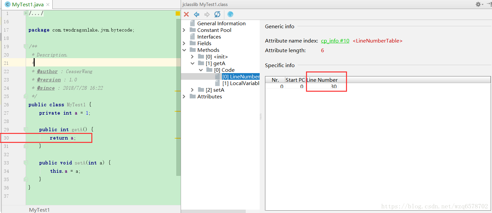
然后是局部变量表：00 0B 常量池的 #11 = Utf8 LocalVariableTable
00 00 00 0C 是局部变量表字节长度是 13个字节。
0001 0000 0005 000C 000D 0000
0001 有一个局部变量。
0000 开始位置0
0005 结束位置5
000C 局部变量的名字 #12 = Utf8 this
000D 是局部变量的描述：#13 = Utf8 Lcom/twodragonlake/jvm/bytecode/MyTest1;
0000 检验码
最后还有一个setA方法：
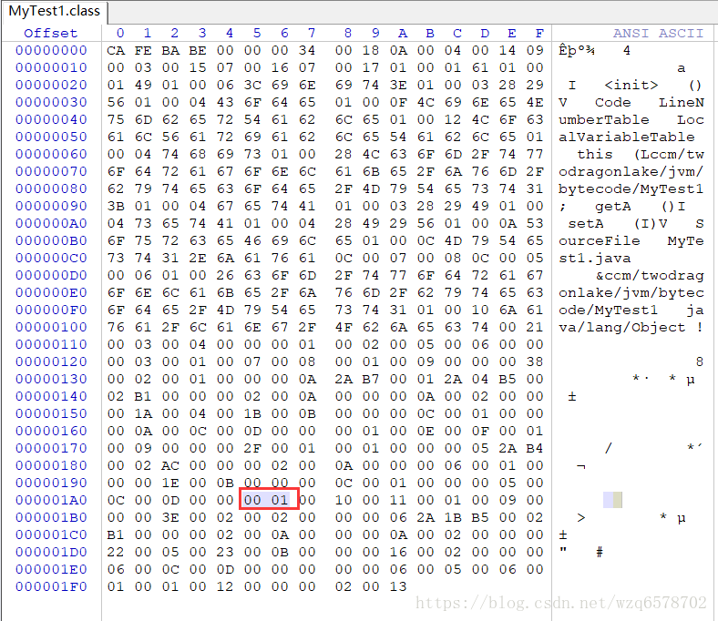
00 01 是public 描述符
00 10 名字索引 #16 = Utf8 setA
00 11 描述符索引 #17 = Utf8 (I)V
00 01 有一个属性
00 09 属性是 #9 = Utf8 Code
00 00 00 3E 属性的长度 是62
00 00 00 3E 是code的如下信息：
max_stack : 00 02
max_locals : 00 02 ,00 02 局部变量的数目 也是2个，既是this和int a
code_length : 00 00 00 06 往后数6个字节：
2A 1B B5 00 02 B1
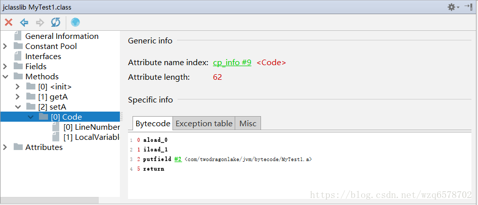
laload_0 2A
iload_1 1B
1 | iload_0 = 26 (0x1a) |
iload_1的参数(给谁赋值)：00 02 【#2 = Fieldref #3.#21 // com/twodragonlake/jvm/bytecode/MyTest1.a:I】
B1 return
2A 1B B5 00 02 B1 后边的 00 00 是异常表的长度为0。
然后00 02 是方法有2个属性:
00 0A #10 = Utf8 LineNumberTable
0000 000A 属性表长度是10个字节。
即：
0002 0000 0022 0005 0023
0002 ： 有2个对应关系、
0000 0022 ： 偏移量0对应 34行。
0005 0023 ： 偏移量5对应 35行。
LineNumberTable 结束.
00 0B #11 = Utf8 LocalVariableTable
LocalVariableTable:
00 00 00 16 ：长度， 后面32个字节是LocalVariableTable的整体。
00 02 ： 局部变量表有2个。
第一个局部变量：
00 00 ：开始位置
00 06 ： 长度是6
00 0C ： 局部变量名字 #12 = Utf8 this
00 0D ：局部变量描述 #13 = Utf8 Lcom/twodragonlake/jvm/bytecode/MyTest1;
0000 检验码
第二个局部变量：
0000 开始位置0
00 06 长度是6
00 05 ： 局部变量名字 #5 = Utf8 a
00 06： 局部变量描述 #6 = Utf8 I
00 01 : 校验码
剩下的数字节码文件的attributes：
00 01 是只有一个属性
00 12 是第一个属性名字的索引 十进制18 ： #18 = Utf8 SourceFile
00 00 00 02长度占据2个字节。
最后的00 13的就是不1个字节。
00 13 是 19 = Utf8 MyTest1.java
至此整个class文件解析完毕。